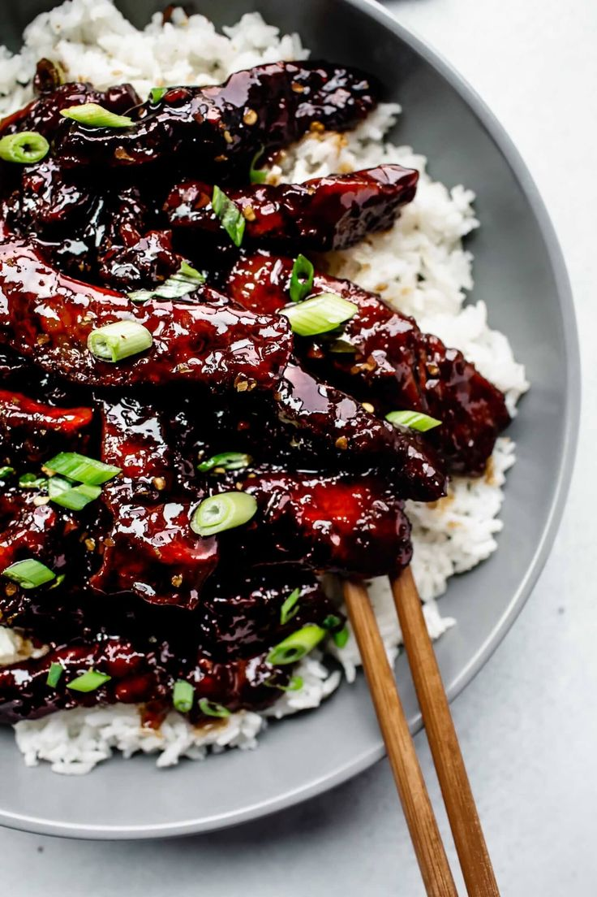

<div class="row">

  <div class="row">

    <div class="col-sm-8">
      
    </div>

    <div class="col-sm 4">
      <h1>Mongolian Beef</h1>
      </span><br />

      <a href="admin_menu.php?item=<?=$result['menu_id']; ?>"> Edit Item</a> -
      <a href="delete.php?item=<?=$result['menu_id']; ?>"> Delete </a>

      <p><strong>Meat </strong></p>
      <p>
        Experience the bold and savory allure of our Mongolian Beef, a dish that brings the rich flavors of Mongolia to your plate. Succulent strips of tender beef are wok-fried to perfection, then generously coated with a delectable, sweet and savory sauce. Our chefs skillfully infuse this classic Mongolian recipe with their own unique touch.
        Each bite is a harmonious blend of succulent beef, crisp scallions, and a symphony of flavors that captures the essence of this beloved Asian dish. It's a tantalizing journey for your taste buds, providing a perfect balance of textures and tastes.
        Mongolian Beef is a true crowd-pleaser, suitable for any occasion. Whether you're joining us for a quick lunch or a special dinner, this dish promises an unforgettable culinary experience. We invite you to savor the taste of Mongolia right here in our restaurant, where tradition meets innovation for a truly memorable dining adventure.
      </p>

      <button class="btn btn-primary" onclick="">Add to Cart</button>
    </div>
  </div>

</div>